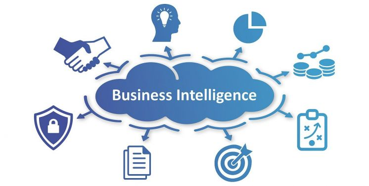
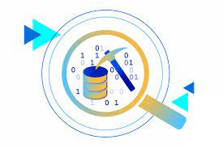
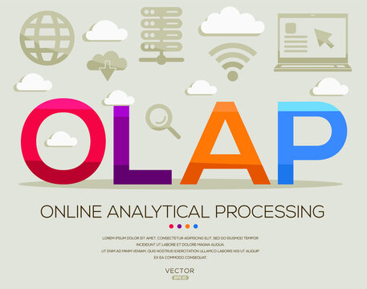

O mundo dos negócios, a quantidade de dados gerados e armazenados cresce exponencialmente. Essa explosão de dados, impulsionada pela digitalização e pelo uso cada vez mais intenso de tecnologias como IoT, Big Data e Inteligência Artificial, apresenta um desafio: como gerenciar e transformar essa vastidão de informações em insights (entendimento) acionáveis que impulsionam o crescimento e a competitividade? Nesse contexto, o uso de um data warehouse torna-se crucial, pois ele centraliza, organiza e facilita o acesso a grandes volumes de dados, permitindo uma análise mais eficiente e tomada de decisões informadas.
Data Warehouse
Um data warehouse é um repositório central de informações que podem ser analisadas para tomar decisões mais adequadas. Os dados fluem de sistemas transacionais, bancos de dados relacionais e de outras fontes para o data warehouse, normalmente com uma cadência regular.
Um Data Warehouse (DW) emerge como a solução ideal para domar a montanha de dados e gerar valor para o seu negócio. Esse repositório centralizado integra dados de diversas fontes, como vendas, marketing, finanças e operações, em um único local, oferecendo uma visão holística e unificada de toda a organização.
Insights
Originário, provavelmente, do escandinavo e do baixo alemão, insight é definido na língua inglesa como “a capacidade de entender verdades escondidas etc., especialmente de caráter ou situação” portando um sentido igual a “discernimento” (Allen, 1990, p.)
Inteligência Empresarial
Com um Data Warehouse (DW) repleto de informações valiosas, o próximo passo é escolher a ferramenta certa de BI para transformá-lo em insights acionáveis. A melhor escolha depende de suas necessidades específicas.

Data Mart
Um data mart é um subconjunto focado de um Data Warehouse (DW), projetado para atender às necessidades de análise de um departamento ou área de negócio específica. Pense nele como um mini-DW com dados relevantes para um grupo específico, como vendas, marketing, finanças ou operações.
Data Mining
O data mining, também conhecido como mineração de dados, é o processo de extrair informações valiosas e padrões ocultos de grandes conjuntos de dados. É como procurar pepitas de ouro em uma mina, mas em vez de terra e pedras, você está vasculhando números, textos e imagens para encontrar insights que possam ser usados para melhorar decisões, otimizar processos e impulsionar o sucesso do seu negócio.

OLAP
Imagine o OLAP como um explorador de dados. Ele foca em analisar grandes volumes de informações históricas, reunidas de diversas fontes, para identificar padrões e tendências.
Objetivo: Auxiliar na tomada de decisões estratégicas baseadas em insights valiosos.
Dados: Utiliza dados agregados (soma, média, etc.), permitindo análises multidimensionais.
Operações: Realiza consultas complexas para explorar os dados por diferentes ângulos (região, produto, período, etc.).

OLTP
Pense no OLTP como o caixa registradora digital de uma empresa. Ele é responsável pelo processamento rápido e preciso de transações individuais em tempo real.
Objetivo: Garantir a eficiência e confiabilidade das operações diárias.
Dados: Trabalha com dados transacionais (cada venda, cada registro de entrada e saída de estoque), provenientes de uma única fonte.
Operações: Prioriza a inserção, atualização e deleção de dados de forma consistente e segura.
SQL
SQL, que significa Structured Query Language (Linguagem de Consulta Estruturada), é uma linguagem de programação projetada para gerenciar e manipular bancos de dados relacionais.
Foi desenvolvida na década de 1970 e é amplamente utilizada em sistemas de gerenciamento de bancos de dados relacionais (RDBMS), como MySQL, PostgreSQL, Oracle, SQL Server e SQLite, entre outros.
Database Marketing
Database Marketing é uma estratégia de marketing que se baseia no uso de um banco de dados de clientes para direcionar campanhas de marketing de forma mais eficaz. Ao coletar e analisar dados sobre o comportamento, histórico de compras e preferências dos clientes, as empresas podem segmentar seu público-alvo e personalizar suas mensagens de marketing, aumentando assim a relevância e eficácia das campanhas.
Uma das principais vantagens do Database Marketing é a capacidade de criar mensagens altamente segmentadas e direcionadas. Ao entender melhor o perfil e comportamento dos clientes, as empresas podem enviar mensagens personalizadas que são mais propensas a ressoar com cada segmento específico, aumentando a probabilidade de conversão e fidelização.
Database Marketing permite às empresas medir com mais precisão o retorno sobre o investimento (ROI) de suas campanhas de marketing. Ao rastrear e analisar as interações dos clientes com as campanhas, as empresas podem identificar quais estratégias são mais eficazes e ajustar suas abordagens de acordo, maximizando assim o ROI de suas atividades de marketing.
O Database Marketing tem a capacidade de melhorar a fidelização do cliente. Ao personalizar as comunicações com os clientes e oferecer ofertas e promoções relevantes, as empresas podem aumentar a satisfação do cliente e incentivá-los a continuar comprando de forma recorrente.
O Database Marketing também pode ajudar as empresas a identificar novas oportunidades de mercado e segmentos de clientes. Ao analisar os dados dos clientes existentes, as empresas podem identificar padrões e tendências que indicam oportunidades de expansão ou novos segmentos de clientes a serem explorados, ajudando assim a impulsionar o crescimento e a inovação.
ROI
ROI significa Return on Investment, ou Retorno sobre o Investimento em português. É uma métrica usada para avaliar a eficiência e lucratividade de um investimento. O ROI é calculado dividindo o lucro líquido gerado pelo investimento pelo custo do investimento e multiplicando o resultado por 100 para obter a porcentagem. Essa métrica é frequentemente usada por empresas e investidores para comparar a rentabilidade de diferentes investimentos e tomar decisões informadas sobre onde alocar recursos. Um ROI positivo indica que o investimento está gerando lucro, enquanto um ROI negativo indica que o investimento está gerando prejuízo.